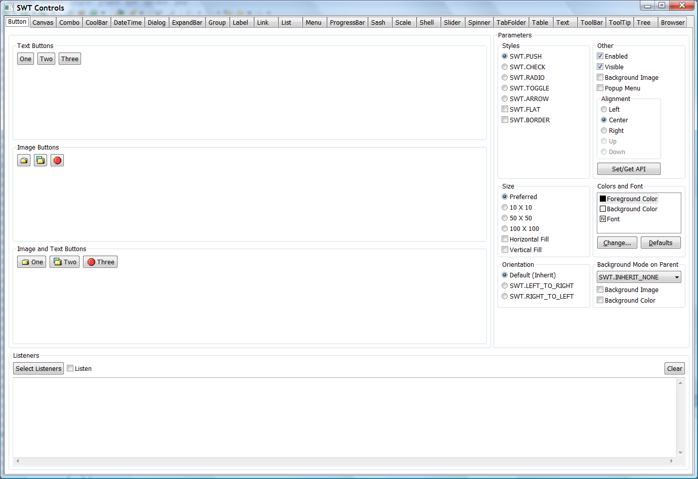

SWT Examples
SWT Examples
SWT Examples are useful little programs that are written in SWT. These are typically much larger and more comprehensive than SWT Snippets.
The following SWT Examples can be downloaded from the Eclipse download page: 
- ControlExample
- CustomControlExample
- AddressBook
- BrowserExample
- ClipboardExample
- DNDExample (Drag and Drop)
- FileViewer
- GraphicsExample
- HelloWorld [1-5]
- HoverHelp
- ImageAnalyzer
- JavaViewer
- LayoutExample
- PaintExample
- TextEditor
- OLEExample (win32 only, OLE)
- OleWebBrowser (win32 only, OLE)
ControlExample, CustomControlExample, LayoutExample, and PaintExample are also available as Eclipse plugins, and the following examples are only available as Eclipse plugins:
- BrowserDemo in the org.eclipse.swt.examples.browser.demos project
- WebBrowser in the org.eclipse.swt.examples.browser project
There are several ways to download and run the SWT examples:
Running the SWT Examples inside Eclipse
- To get the examples, go to the Eclipse downloads page at https://download.eclipse.org/eclipse/downloads.
- Click on the Eclipse build that you would like examples for (i.e. the Eclipse build that you are running; typically the latest Stable Build).
- Scroll down until you see "Eclipse p2 Repository", use the update site provided under "To update your build to use this specific build, you can use the software repository at" to install using "Install New Sotware..." under Help menu.
- After installing the examples, you can find their source in
eclipse/plugins/org.eclipse.swt.examples.<exampleName>.source_<version>.jar. - To run the plug-in SWT examples, restart Eclipse, go to Window > Show View... > Other... and expand "SWT Examples".
Alternatively, you can use these (more detailed) steps from the Eclipse ISV doc to download, install, and run the Eclipse SWT Examples:
Launching standalone SWT Examples inside Eclipse
- Load SWT into your workspace.
- Load the SWT examples into your workspace by one of the methods listed above.
- Run a standalone example by selecting the main class (e.g. org.eclipse.swt.examples.controlexample.ControlExample) and selecting
Run > Run As > Java Application (Note: prior to Eclipse 3.3 use Run > Run As > SWT Application).
Running standalone SWT Examples outside of Eclipse
(NOTE: these instructions will only work for Eclipse 3.3 and newer) To run the ControlExample or CustomControlExample standalone:
- Go to the Eclipse downloads page at https://download.eclipse.org/eclipse/downloads/.
- Click on the Eclipse build that you would like examples for (i.e. the Eclipse/SWT build that you are running; typically the latest Stable Build).
- Scroll down until you see "Eclipse p2 Repository", go to link provided under "To update your build to use this specific build, you can use the software repository at".
- Go to plugins folder, find file
org.eclipse.swt.examples_<version>.jar, and download it. - Extract
org.eclipse.swt.examples_<version>.jarto a folder. - Open a DOS window (on Windows) or a terminal window (on Mac or Linux) and navigate to this directory.
- To run the example, type the following line with the appropriate paths substituted:
<pathToYourJRE>\bin\java -classpath <pathOfYourPlatformSWTjar>;.\swtexamples.jar org.eclipse.swt.examples.controlexample.ControlExampleThis is the ControlExample. There is a tab for each control, and you can change the various styles, etc, to see what changes in the controls. To run the CustomControlExample simply use the class name CustomControlExample instead of ControlExample in step 6.